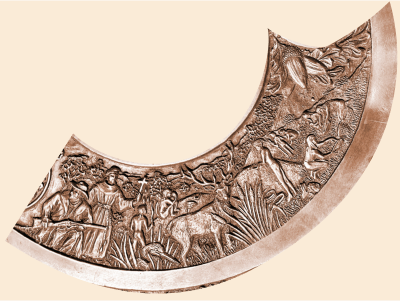

can you find the missing seal pieces before it's too late?
Hello Agent. The Davis seal was broken and scattered across time and space. Please find the missing piece and return it to the mayor. We’re counting on you.
Your first stop is the Patwin village of Topaidihi, the land Davis used to be back in before the 1800s. Good luck, agent.
